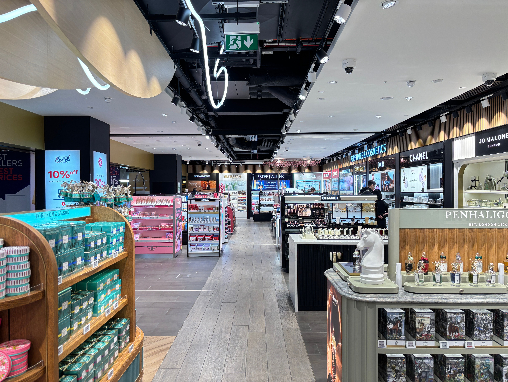

Our Story

Niche Perfumes is a proposed retail business based in Cape Town, South Africa, specialising in authentic luxury fragrances for men and women.
Our Mission
To make distinctive, high-quality fragrances accessible to South African customers who want to move beyond mass-market scents.
Our Vision
To become Cape Town's most trusted destination for niche and heritage-inspired perfumery.
Frequently Asked Questions
Everything you need to know before choosing your next signature scent.
Yes. Every fragrance at Niche Perfumes is 100% authentic and sourced directly from recognised perfume houses and their authorised distributors. We never sell copies, testers presented as new stock, or grey-market products.
We deliver across Cape Town and the surrounding areas, and you can also collect your order from our store in the Cape Town CBD. Nationwide delivery across South Africa is planned as the business grows.
Yes. Every perfume can be gift-wrapped in our signature black and gold packaging at no extra cost. We also prepare curated gift sets for birthdays, anniversaries, and corporate clients.
Unopened perfumes in their original sealed packaging can be returned within 72 hours of purchase, with your till slip as proof of purchase. Returned items can be exchanged or credited, as we do not offer refunds. For hygiene reasons, opened or used fragrances cannot be returned.
Let the weather and the occasion guide you:
- Hot or humid days: heat makes a fragrance stronger, so choose light fresh, citrus, aquatic, or green scents, ideally an eau de toilette, and use only one or two sprays.
- Cold or winter days: cold air softens a scent, so richer woody, amber, and vanilla fragrances (often an eau de parfum) last longer and feel warmer.
- Mild or rainy days: soft florals and clean musks feel balanced without being too heavy.
- Day or evening: keep lighter scents for work and daytime, and save intense woody or oriental scents for evenings and special occasions.
Perfume types, from the lightest to the strongest:
- Eau de Cologne (about 2–4% perfume oil): the lightest, ideal for very hot days.
- Eau de Toilette (about 5–15%): light and fresh, for daytime and summer.
- Eau de Parfum (about 15–20%): more intense and longer lasting, for winter and evenings.
- Parfum / Extrait (about 20–30%): the most concentrated, for special occasions.
Explore our scent families on the Products page, or send us an enquiry for a personal recommendation.
Most perfumes are alcohol-based, which helps the scent spread, but alcohol can dry out or irritate sensitive skin. A few simple tips:
- Test first: apply a small amount to your inner wrist and wait 24 hours before wearing it more widely.
- Spray on clothing instead of skin: fabric holds a scent well. Test on a hidden area first, as some delicate fabrics can stain.
- Avoid irritated or freshly shaved skin, and never apply perfume to broken skin.
- Choose gentler formats: alcohol-free perfume oils and light body mists are kinder to sensitive skin. Ask us which ones we stock.
If redness or itching appears, stop using the product and ask a pharmacist or doctor for advice.